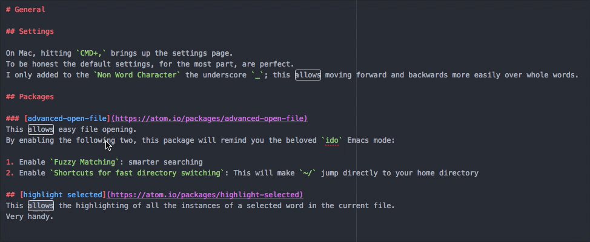

- Fri 20 January 2017
- HowTo
- #atom, #python, #editor, #superuser
Introduction
I recently discovered Atom. In the past, I've been using Emacs but not so long ago I realized that it is time to move on. Sublime Text 3 was the next editor, but only for a short while. Getting to know Atom and the fact it is free made me move. In this post, I'd like to share with you some of my initial learnings and settings that I came up with.
General
Settings
On Mac, hitting CMD , brings up the settings page.
To be honest the default settings, for the most part, are perfect.
I only added to the Non Word Character the underscore _; this allows moving forward and backwards more easily over whole words.
Packages
Note: Some of the packages I mention below are pre-installed and some you'd have to install by yourself.
advanced-open-file
This allows easy file opening.
By enabling the following two, this package will remind you the beloved ido Emacs mode:
- Enable
Fuzzy Matching: smarter searching - Enable
Shortcuts for fast directory switching: This will make~/jump directly to your home directory
highlight selected
This allows the highlighting of all the instances of a selected word in the current file. Very handy.

pretty json
This will simply allow prettifying JSONs.
platformio ide terminal
Adds a terminal to Atom. I am still not fluent in terms of the key bindings, but this should be helpful. By the way, as I'm using Powerline-shell for my terminal, I had to configure the font of this package. This can be easily achieved in the package's settings.
For easier switching between the terminal and the open file(s), I added the following to ~/.atom/init.coffee:
atom.packages.onDidActivatePackage (pack) ->
if pack.name == 'platformio-ide-terminal'
atom.commands.add 'atom-workspace',
'editor:focus-main', ->
p = atom.workspace.getActivePane()
panels = atom.workspace.getBottomPanels()
term = panels.find (pan) ->
pan.item.constructor.name == 'PlatformIOTerminalView' and pan.visible
if not term
# Open a new terminal
editor = atom.workspace.getActiveTextEditor()
atom.commands.dispatch(atom.views.getView(editor), 'platformio-ide-terminal:new')
else if term and p.focused isnt false
term.item.focus()
else if term and p.focused is false
term.item.blur() # Stops the terminal from blinking
p.activate()
Unfortunately, I don't remember where I found this.
whitespace
This will remove trailing whitespace upon saving. Remember that this is very helpful when it comes to putting your code/text under versioning control.
Additional languages
If you're writing in a language which is not natively supported by Atom, you can most likely add it. In my case, I add language-ini to support the editing of INI files.
Spell checking
There's a pre-installed package to handle this. Probably, at some point I'll look deeper into it. Ultimately, I'd like to have it enabled inside the comments of any code but not in its body. That's on the todo list.
Python related
I work a lot with Python, to that end, there are several hacks I found to be useful.
Hydrogen
This allows the evaluation of Python lines within the editor! It spawns a Jupyter kernel and uses it.
autocomplete python
More advanced autocompletion; it looks up the doc-strings, identifies variables and functions etc.
To enable this one, I had to
1. Re-install the six module. Simply had to run conda install -f six
2. Point to the location of my Anaconda installation.
On the todo list is to make sure that this package is aware of Python environments.
Next steps
There are so many more things to learn and define with Atom. Here are some ideas: - Learn how to use git from within Atom. This must be fun as, after all, Atom was developed by GitHub - Improve the integration of Atom, Markdown and Pelican to enable easier blogging